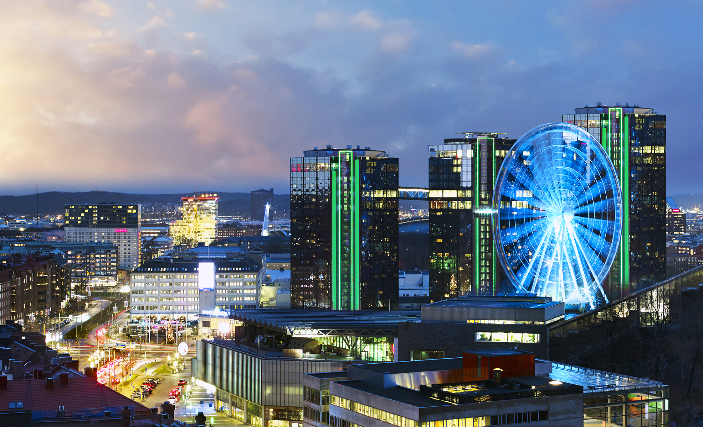

Göteborg
Historia och sevärdheter
Göteborg är Sveriges näst största tätort, efter Stockholm, och Nordens femte största med omkring 570 000 invånare i tätorten och 1 000 000 invånare (2017) i Storgöteborg. Samhället ligger på västkusten vid Göta älvs mynning.
Staden Göteborg anlades på initiativ av kung Gustav II Adolf och fick sina stadsprivilegier 1621. Med anledning av sin stadsplanering, kallades Göteborg av holländarna under många år för Nya Amsterdam. På 1800-talet industrialiserades Göteborg till stor del av inflyttade britter och under denna tid fick Göteborg smeknamnet "Lilla London", vilket staden kallas än idag.

Namn: Göteborg
Smeknamn: Lilla London
Län: Västa Götalands län
Invånarantal: 1 000 000
Befolkningstäthet: 2 663/km^2